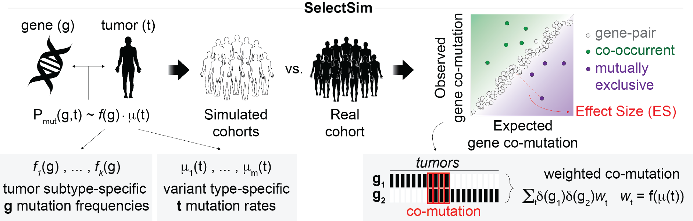

SelectSim is an R package that infers evolutionary dependencies — co-mutations and mutual exclusivities — between functional alterations across cancer genomes. It estimates the expected co-mutation frequency for each gene pair from individual mutation frequencies and per-sample tumor mutation burden (TMB), then evaluates significance against a permutation-based null model.

The method accounts for heterogeneous tumor types, tissue specificities, and distinct mutational processes through a covariate-aware weighting scheme. Significance is assessed as a weighted effect size with frequency-stratified FDR control.
This package accompanies the manuscript:
Iyer A, Mina M, Petrovic M, Ciriello G (2026). Evolving patterns of co-mutations from tumor initiation to metastatic progression. TBD. doi:[10.5281/zenodo.19680236](https://doi.org/10.5281/zenodo.19680236)
Installation
You can install the development version of SelectSim from GitHub with:
# install.packages("devtools")
devtools::install_github("CSOgroup/SelectSim", dependencies = TRUE, build_vignettes = TRUE)For more details on installation refer to INSTALLATION.
Quick start
library(SelectSim)
library(dplyr)
# Load the bundled TCGA LUAD example data
data(luad_run_data, package = "SelectSim")
# Run SelectSim (1 000 permutations, single core)
result <- selectX(
M = luad_run_data$M,
sample.class = luad_run_data$sample.class,
alteration.class = luad_run_data$alteration.class,
n.cores = 1,
min.freq = 10,
n.permut = 1000,
lambda = 0.3,
tau = 1,
maxFDR = 0.25
)
# Significant evolutionary dependencies at FDR ≤ 0.25
result$result |> filter(nFDR2 <= 0.25) |> head()For a full walkthrough see the Introduction vignette.
Documentation
Full documentation and vignettes are available at https://csogroup.github.io/SelectSim/.
Citation
If you use SelectSim in your research, please cite:
Iyer A, Mina M, Petrovic M, Ciriello G (2026). Evolving patterns of co-mutations from tumor initiation to metastatic progression. TBD. doi:[10.5281/zenodo.19680236](https://doi.org/10.5281/zenodo.19680236)
You can also run citation("SelectSim") inside R for a formatted reference.
Contact
- For bugs or feature requests, please use the issue tracker.
- For other questions, contact Prof. Giovanni Ciriello (giovanni.ciriello@unil.ch) or Arvind Iyer (ayalurarvind@gmail.com).